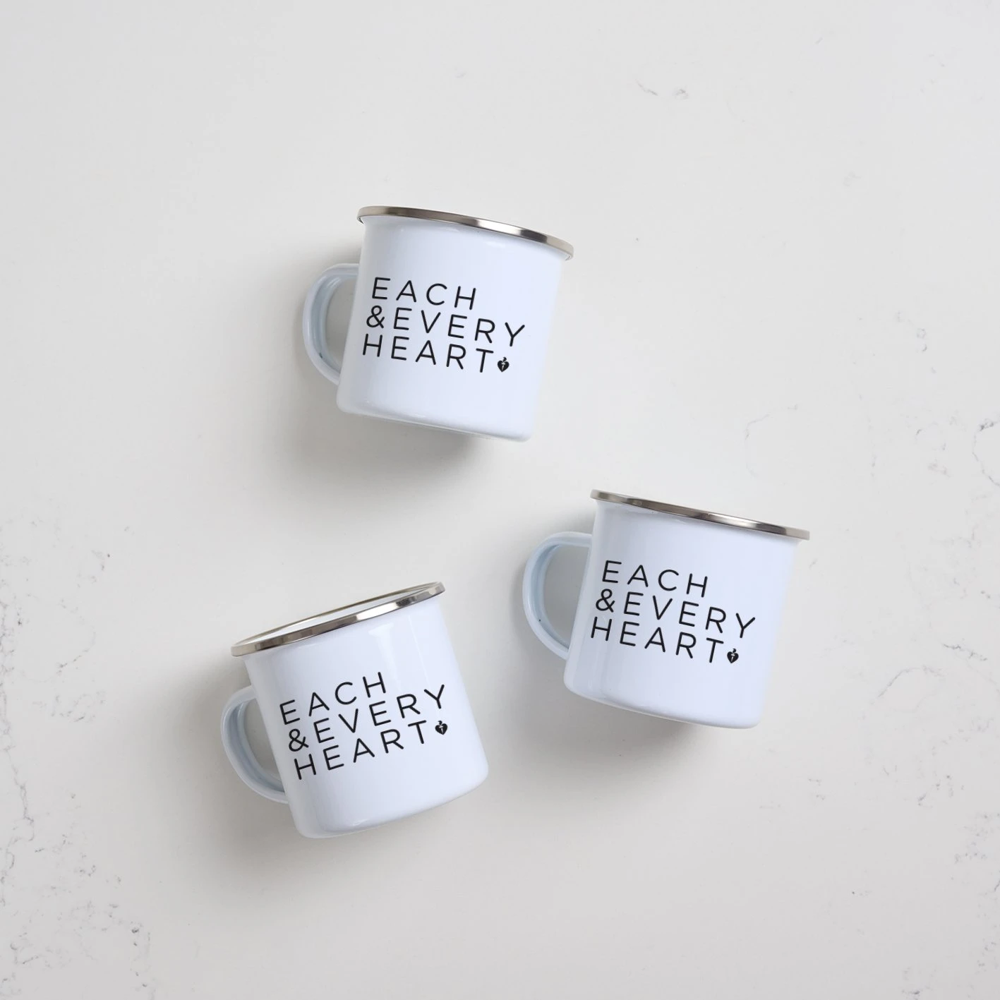
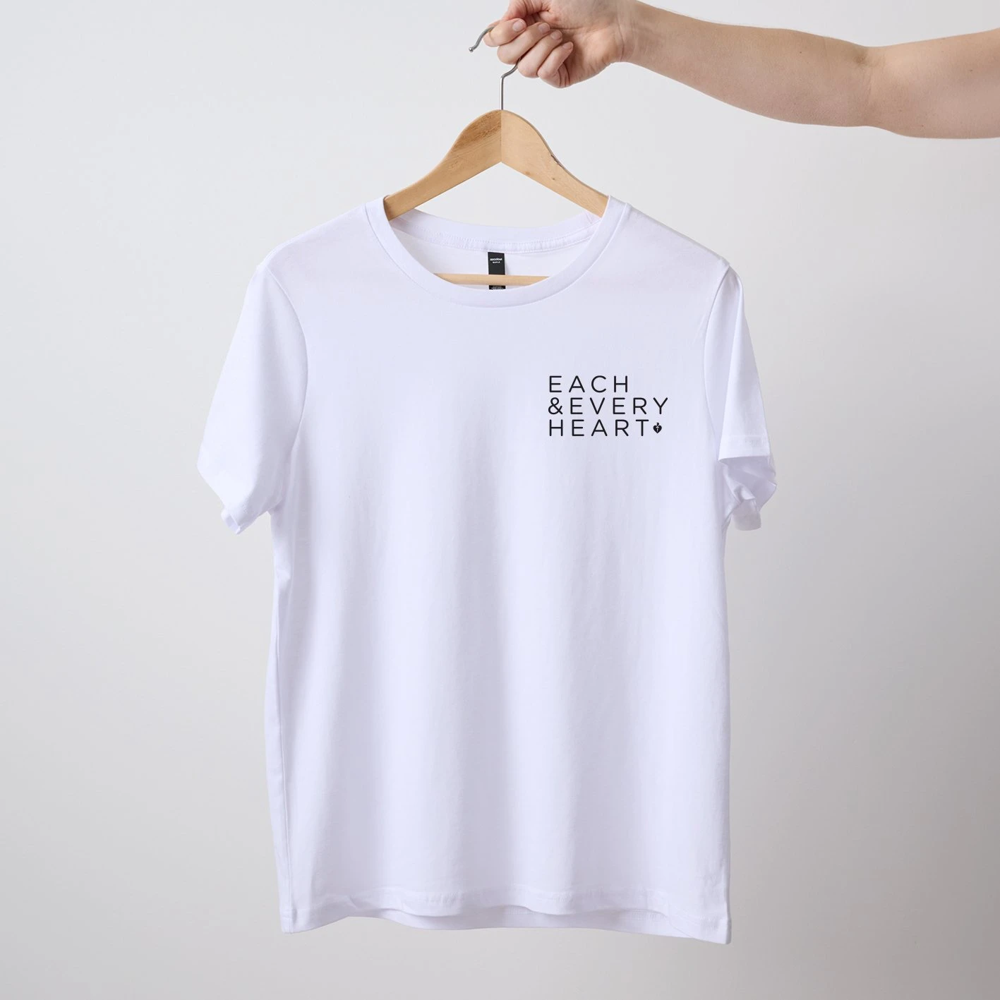
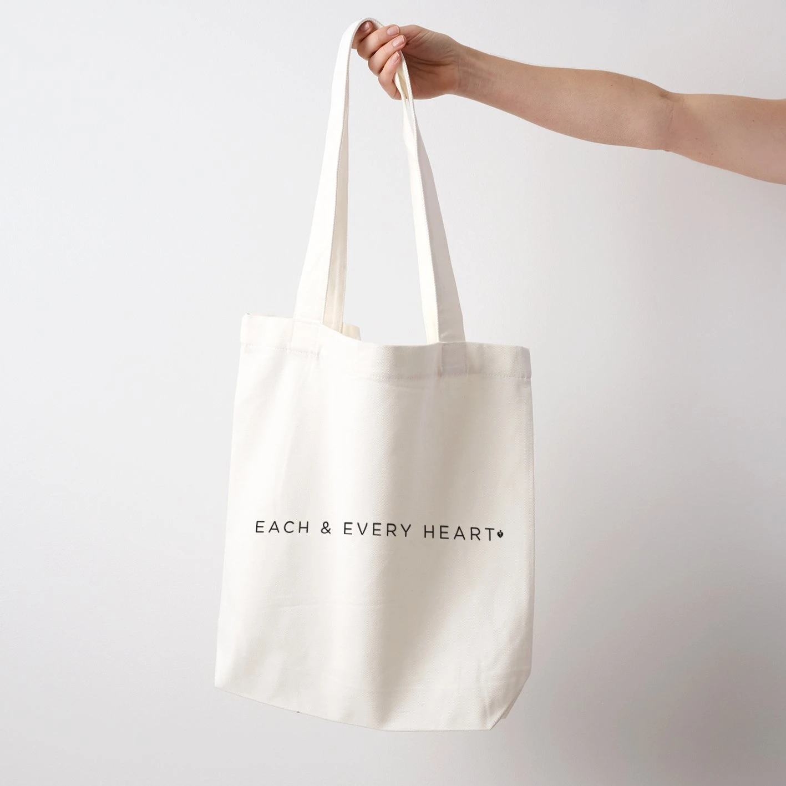

Heart Foundation Australia
allHearts.
A retail brand that gives everyday objects a purpose: starting conversations about heart health.

The idea
Each and every heart.
The Each and Every Heart range put a simple message on clothing and everyday products, creating a way to talk about women’s heart health. A Shopify store and paid and organic promotion connected the range to shoppers, with proceeds supporting the Heart Foundation’s research.


My contribution
A retail experience with purpose.
My work brought together the brand, product range and path to purchase. Shopify and Salesforce Marketing Cloud supported the planned customer journey, from welcome communications to product promotion and loyalty.
Project details & credits
Next project
Barnardos Buddies.